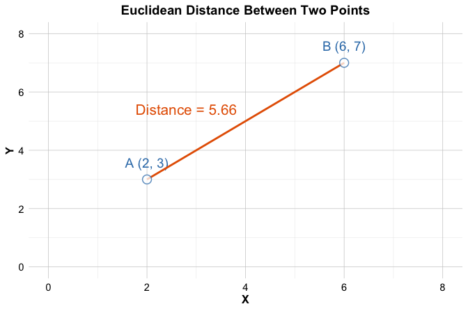

13 Clustering for Insight: Segmenting Data Without Labels
We are pattern-seeking animals.
Imagine walking into a grocery store and seeing shelves lined with cereal boxes. Without reading a single label, you might still group products by visible cues such as shape, size, or color. Clustering methods support a similar goal in data analysis: they organize observations into groups based on measured similarity, even when no categories are provided.
How do apps seem to recognize user habits when no one has explicitly labeled the data? Fitness trackers may group users into behavioral profiles, and streaming platforms may identify viewing patterns that support recommendation. In such settings, clustering provides a way to uncover structure in unlabeled data and to summarize large collections of observations into a smaller number of representative groups.
Clustering is a form of unsupervised learning that partitions data into clusters so that observations within the same cluster are more similar to one another than to observations in other clusters. Unlike classification, which predicts known labels (for example, spam versus not spam), clustering is exploratory: it proposes groupings that can guide interpretation, generate hypotheses, and support downstream analysis.
Because many practical datasets do not come with a clear outcome variable, clustering is widely used as an early step in data science projects. Common applications include customer segmentation, grouping documents by topic, and identifying patterns in biological measurements.
What This Chapter Covers
This chapter introduces clustering as a core technique in unsupervised learning and continues the progression of the Data Science Workflow presented in Chapter 2. In previous chapters, we focused on supervised learning methods for classification and regression, including regression models (Chapter 10), tree-based approaches (Chapter 11), and neural networks (Chapter 12). These methods rely on labeled data and well-defined outcome variables.
Clustering addresses a different analytical setting: exploration without labels. Rather than predicting known outcomes, the goal is to uncover structure, summarize patterns, and support insight generation when no response variable is available.
In this chapter, we examine:
the fundamental principles of clustering and its distinction from classification,
how similarity is defined and measured in clustering algorithms,
the K-means algorithm as a widely used clustering method, and
a case study that applies clustering to segment cereal products based on nutritional characteristics.
The chapter concludes with exercises that provide hands-on experience with clustering using real-world datasets, encouraging you to explore how design choices such as feature selection, scaling, and the number of clusters influence the resulting groupings.
By the end of the chapter, you will be able to apply clustering techniques to unlabeled datasets, make informed choices about similarity measures and the number of clusters, and interpret clustering results in a substantive, domain-aware manner.
13.1 What is Cluster Analysis?
Clustering is an unsupervised learning technique that organizes data into groups, or clusters, of similar observations. Unlike supervised learning, which relies on labeled examples, clustering is exploratory: it aims to reveal structure in data when no outcome variable is available. A well-constructed clustering groups observations so that those within the same cluster are more similar to one another than to observations assigned to different clusters.
To clarify this distinction, it is helpful to contrast clustering with classification, introduced in Chapters 7 and 9. Classification assigns new observations to predefined categories based on labeled training data. Clustering, by contrast, infers groupings directly from the data itself. The resulting cluster labels are not known in advance and should be interpreted as analytical constructs rather than ground truth. In practice, such labels are often used to support interpretation or as derived features in downstream models, including neural networks and tree-based methods.
The objective of clustering is to achieve high intra-cluster similarity and low inter-cluster similarity. This principle is illustrated in Figure 13.1, where compact, well-separated groups correspond to an effective clustering solution.
Beyond exploratory analysis, clustering often plays a practical role within broader machine learning workflows. By summarizing large datasets into a smaller number of representative groups, clustering can reduce computational complexity, improve interpretability, and support subsequent modeling tasks.
Because many clustering methods rely on distance or similarity calculations, appropriate data preparation is essential. Features measured on different scales can disproportionately influence similarity, and categorical variables must be encoded numerically to be included in distance-based analyses. Without such preprocessing, clustering results may reflect artifacts of measurement rather than meaningful structure in the data.
These considerations lead naturally to a central question: how do clustering algorithms quantify similarity between observations? We address this next.
How Do Clustering Algorithms Measure Similarity?
At the core of clustering lies a fundamental question: how similar are two observations? Clustering algorithms address this question through similarity measures, which quantify the degree to which observations resemble one another. The choice of similarity measure is critical, as it directly shapes the structure of the resulting clusters.
For numerical features, the most commonly used measure is Euclidean distance, which captures the straight-line distance between two points in feature space. This measure was previously introduced in the context of the k-Nearest Neighbors algorithm (Section 7.4). In clustering, Euclidean distance plays a related role by determining which observations are considered close enough to belong to the same group.
Formally, the Euclidean distance between two observations
\(x = (x_1, x_2, \ldots, x_n)\) and
\(y = (y_1, y_2, \ldots, y_n)\)
with \(n\) features is defined as: \[
\text{dist}(x, y) = \sqrt{ \sum_{i=1}^n (x_i - y_i)^2 }.
\]

As illustrated in Figure 13.2, Euclidean distance captures the geometric separation between two points. For Point A=(2, 3) and Point B=(6, 7), this distance is \[ \text{dist}(A, B) = \sqrt{(6 - 2)^2 + (7 - 3)^2} = \sqrt{32} \approx 5.66. \] While this interpretation is straightforward in two dimensions, clustering algorithms typically operate in much higher-dimensional spaces, often involving dozens or hundreds of features.
Because distance calculations are sensitive to feature scales and data representation, appropriate preprocessing is essential. Features measured on different scales can dominate similarity calculations simply due to their units, making feature scaling a necessary step in distance-based clustering. Likewise, categorical variables must be converted into numerical form, for example through one-hot encoding, before they can be included in distance computations. Without these preparations, clustering results may reflect artifacts of measurement rather than meaningful structure in the data.
Although Euclidean distance is the default choice in many clustering algorithms, alternative measures such as Manhattan distance or cosine similarity are better suited to specific data types and analytical goals. Selecting an appropriate similarity measure is therefore a substantive modeling decision, not merely a technical detail.
13.2 K-means Clustering
How does an algorithm decide which observations belong together? K-means clustering addresses this question by representing each cluster through a centroid and assigning observations to the nearest centroid based on distance. By alternating between assignment and update steps, the algorithm gradually refines both the cluster memberships and their representative centers, leading to a stable partition of the data.
The K-means algorithm requires the number of clusters, \(k\), to be specified in advance. Given a choice of \(k\), the algorithm proceeds as follows:
Initialization: Select \(k\) initial cluster centers, typically at random.
Assignment: Assign each observation to the nearest cluster center.
Update: Recompute each cluster center as the mean of the observations assigned to it.
Iteration: Repeat the assignment and update steps until cluster memberships no longer change.
To illustrate these steps, consider a dataset consisting of 50 observations with two features, \(x_1\) and \(x_2\), shown in Figure 13.3. The goal is to partition the data into three clusters.

The algorithm begins by selecting three observations as initial cluster centers, illustrated by red stars in the left panel of Figure 13.4. Each data point is then assigned to its nearest center, producing an initial clustering shown in the right panel. The dashed lines indicate the corresponding Voronoi regions, which partition the feature space according to proximity to each center.
After the initial assignment, the algorithm updates the cluster centers by computing the centroid of each group. These updated centroids are shown in the left panel of Figure 13.5. As the centers move, the Voronoi boundaries shift, causing some observations to be reassigned, as shown in the right panel.

This process of reassignment and centroid update continues iteratively. With each iteration, the cluster structure becomes more stable, as illustrated in Figure 13.6. Eventually, no observations change clusters, and the algorithm converges, producing the final clustering shown in Figure 13.7.

Once the algorithm has converged, the results can be summarized in two complementary ways: the cluster assignments, which indicate the group membership of each observation, and the cluster centroids, which serve as representative profiles of the clusters. These centroids are particularly useful in applications such as customer segmentation, image compression, and document clustering, where the goal is to reduce complexity while preserving meaningful structure.
Despite its simplicity and efficiency, K-means has important limitations. The solution depends on the initial placement of cluster centers, meaning that different runs may yield different results. The algorithm also assumes clusters of roughly spherical shape and similar size and is sensitive to outliers, which can distort centroid locations. In practice, techniques such as multiple random starts or the K-means++ initialization strategy (Arthur and Vassilvitskii 2006) are commonly used to mitigate these issues.
This example illustrates the mechanics of K-means clustering. An equally important question, however, concerns the choice of the number of clusters, which we address next.
13.3 Selecting the Optimal Number of Clusters
A central challenge in applying K-means clustering is determining an appropriate number of clusters, \(k\). This choice has a direct impact on the resulting partition: too few clusters may obscure meaningful structure, whereas too many may fragment the data and reduce interpretability. Unlike supervised learning, where performance metrics such as accuracy or AUC guide model selection, clustering lacks an external ground truth. As a result, the choice of \(k\) is inherently subjective, though not arbitrary.
In some applications, domain knowledge provides useful initial guidance. For example, a marketing team may choose a small number of customer segments to align with strategic objectives, or an analyst may begin with a number of clusters suggested by known categories in the application domain. In many cases, however, no natural grouping is evident, and data-driven heuristics are needed to inform the decision.
One widely used heuristic is the elbow method, which examines how within-cluster variation changes as the number of clusters increases. As additional clusters are introduced, within-cluster variation typically decreases, but the marginal improvement diminishes beyond a certain point. The aim is to identify this point of diminishing returns, often referred to as the elbow.
This idea is illustrated in Figure 13.8, which plots the total within-cluster sum of squares (WCSS) against the number of clusters. A pronounced bend in the curve suggests a value of \(k\) that balances model simplicity with explanatory power.
While the elbow method is intuitive and easy to apply, it has limitations. Some datasets exhibit no clear elbow, and evaluating many values of \(k\) may be computationally expensive for large datasets. For these reasons, the elbow method is often used in combination with other criteria.
Alternative approaches include the silhouette score, which assesses how well observations fit within their assigned clusters relative to others, and the gap statistic, which compares the observed clustering structure to that expected under a null reference distribution. When clustering is used as a preprocessing step, the choice of \(k\) may also be informed by performance in downstream tasks, such as the stability or usefulness of derived features in subsequent models.
Ultimately, the goal is not to identify a single “optimal” value of \(k\), but to arrive at a clustering solution that is interpretable, stable, and appropriate for the analytical objective. Examining how clustering results change across different values of \(k\) is often informative in itself. Stable groupings suggest meaningful structure, whereas highly variable solutions may indicate ambiguity in the data.
In the next section, we apply these ideas in a case study, illustrating how domain knowledge, visualization, and iterative experimentation jointly inform the choice of \(k\) in practice.
13.4 Case Study: Segmenting Cereal Brands by Nutrition
Why do some breakfast cereals appear to target health-conscious consumers, while others are positioned toward children or indulgence-oriented markets? Such distinctions often reflect underlying differences in nutritional composition. In this case study, we use K-means clustering to explore how cereal products group naturally based on measurable nutritional attributes.
Using the cereal dataset from the liver package, we analyze 77 cereal brands described by variables such as calories, fat, protein, and sugar. Rather than imposing predefined categories, clustering allows us to investigate whether distinct nutritional profiles emerge directly from the data. Although simplified, this example illustrates how unsupervised learning can support exploratory analysis and inform decisions in areas such as product positioning, marketing strategy, and consumer segmentation.
The case study follows the Data Science Workflow (introduced in Chapter 2 and illustrated in Figure 2.3), emphasizing data preparation, thoughtful feature selection, and careful interpretation of clustering results. Rather than identifying definitive product categories, it illustrates how clustering can be used to uncover structure and generate insight from unlabeled data.
13.4.1 Overview of the Dataset
What do breakfast cereals reveal about nutritional positioning and consumer targeting? The cereal dataset provides a compact yet information-rich snapshot of packaged food products. It contains data on 77 breakfast cereals from major manufacturers, described by 16 variables capturing nutritional composition, product characteristics, and shelf placement. The dataset is included in the liver package and can be loaded as follows:
To inspect the structure of the dataset, we use:
str(cereal)
'data.frame': 77 obs. of 16 variables:
$ name : Factor w/ 77 levels "100% Bran","100% Natural Bran",..: 1 2 3 4 5 6 7 8 9 10 ...
$ manuf : Factor w/ 7 levels "A","G","K","N",..: 4 6 3 3 7 2 3 2 7 5 ...
$ type : Factor w/ 2 levels "cold","hot": 1 1 1 1 1 1 1 1 1 1 ...
$ calories: int 70 120 70 50 110 110 110 130 90 90 ...
$ protein : int 4 3 4 4 2 2 2 3 2 3 ...
$ fat : int 1 5 1 0 2 2 0 2 1 0 ...
$ sodium : int 130 15 260 140 200 180 125 210 200 210 ...
$ fiber : num 10 2 9 14 1 1.5 1 2 4 5 ...
$ carbo : num 5 8 7 8 14 10.5 11 18 15 13 ...
$ sugars : int 6 8 5 0 8 10 14 8 6 5 ...
$ potass : int 280 135 320 330 -1 70 30 100 125 190 ...
$ vitamins: int 25 0 25 25 25 25 25 25 25 25 ...
$ shelf : int 3 3 3 3 3 1 2 3 1 3 ...
$ weight : num 1 1 1 1 1 1 1 1.33 1 1 ...
$ cups : num 0.33 1 0.33 0.5 0.75 0.75 1 0.75 0.67 0.67 ...
$ rating : num 68.4 34 59.4 93.7 34.4 ...Here is an overview of the features included in the dataset:
-
name: Name of the cereal (categorical, nominal). -
manuf: Manufacturer (categorical, nominal), coded as A (American Home Food Products), G (General Mills), K (Kelloggs), N (Nabisco), P (Post), Q (Quaker Oats), and R (Ralston Purina). -
type: Cereal type, hot or cold (categorical, binary). -
calories: Calories per serving (numerical). -
protein: Grams of protein per serving (numerical). -
fat: Grams of fat per serving (numerical). -
sodium: Milligrams of sodium per serving (numerical). -
fiber: Grams of dietary fiber per serving (numerical). -
carbo: Grams of carbohydrates per serving (numerical). -
sugars: Grams of sugar per serving (numerical). -
potass: Milligrams of potassium per serving (numerical). -
vitamins: Percentage of recommended daily vitamins (ordinal: 0, 25, or 100). -
shelf: Store shelf position (ordinal: 1, 2, or 3). -
weight: Weight of one serving in ounces (numerical). -
cups: Number of cups per serving (numerical). -
rating: Overall cereal rating score (numerical).
The dataset combines feature types commonly encountered in practice, including nominal identifiers, ordinal variables, and continuous numerical measures. Recognizing these distinctions is important when preparing the data for clustering, as distance-based methods require numerical representations on comparable scales.
Before applying K-means clustering, we therefore prepare the data by addressing missing values, selecting features that meaningfully reflect nutritional differences, and applying scaling. These steps ensure that the resulting clusters are driven by substantive patterns in the data rather than artifacts of measurement or representation.
13.4.2 Data Preparation for Clustering
What makes some cereals more alike than others? Before exploring this question with clustering, we must ensure that the data reflects meaningful similarities rather than artifacts of measurement or coding. This step corresponds to the second stage of the Data Science Workflow (Figure 2.3): Data Preparation (Section 3). Because K-means relies on distance calculations, clustering outcomes are particularly sensitive to data quality and feature scaling, making careful preprocessing essential.
A summary of the cereal dataset reveals anomalous values in the sugars, carbo, and potass variables, where some entries are recorded as -1:
summary(cereal)
name manuf type calories protein fat sodium
100% Bran : 1 A: 1 cold:74 Min. : 50.0 Min. :1.000 Min. :0.000 Min. : 0.0
100% Natural Bran : 1 G:22 hot : 3 1st Qu.:100.0 1st Qu.:2.000 1st Qu.:0.000 1st Qu.:130.0
All-Bran : 1 K:23 Median :110.0 Median :3.000 Median :1.000 Median :180.0
All-Bran with Extra Fiber: 1 N: 6 Mean :106.9 Mean :2.545 Mean :1.013 Mean :159.7
Almond Delight : 1 P: 9 3rd Qu.:110.0 3rd Qu.:3.000 3rd Qu.:2.000 3rd Qu.:210.0
Apple Cinnamon Cheerios : 1 Q: 8 Max. :160.0 Max. :6.000 Max. :5.000 Max. :320.0
(Other) :71 R: 8
fiber carbo sugars potass vitamins shelf weight
Min. : 0.000 Min. :-1.0 Min. :-1.000 Min. : -1.00 Min. : 0.00 Min. :1.000 Min. :0.50
1st Qu.: 1.000 1st Qu.:12.0 1st Qu.: 3.000 1st Qu.: 40.00 1st Qu.: 25.00 1st Qu.:1.000 1st Qu.:1.00
Median : 2.000 Median :14.0 Median : 7.000 Median : 90.00 Median : 25.00 Median :2.000 Median :1.00
Mean : 2.152 Mean :14.6 Mean : 6.922 Mean : 96.08 Mean : 28.25 Mean :2.208 Mean :1.03
3rd Qu.: 3.000 3rd Qu.:17.0 3rd Qu.:11.000 3rd Qu.:120.00 3rd Qu.: 25.00 3rd Qu.:3.000 3rd Qu.:1.00
Max. :14.000 Max. :23.0 Max. :15.000 Max. :330.00 Max. :100.00 Max. :3.000 Max. :1.50
cups rating
Min. :0.250 Min. :18.04
1st Qu.:0.670 1st Qu.:33.17
Median :0.750 Median :40.40
Mean :0.821 Mean :42.67
3rd Qu.:1.000 3rd Qu.:50.83
Max. :1.500 Max. :93.70
As discussed in Section 3.8, placeholder values such as -1 are often used to represent missing or unknown information, especially for variables that should be non-negative. Since negative values are not meaningful for nutritional measurements, we recode these entries as missing:
cereal[cereal == -1] <- NA
find.na(cereal)
row col
[1,] 58 9
[2,] 58 10
[3,] 5 11
[4,] 21 11The find.na() function from the liver package reports the locations of missing values. In this dataset, there are 4 such entries, with the first occurring in row 58 and column 9.
To handle missing values, we apply predictive imputation using random forests, as introduced in Section 3.8. This approach exploits relationships among observed variables to estimate missing entries. We use the mice() function from the mice package with the "rf" method. For demonstration purposes, we generate a single imputed dataset using a small number of trees and one iteration, focusing on illustrating the workflow rather than optimizing imputation performance:
library(mice)
imp <- mice(cereal, method = "rf", ntree = 3, m = 1, maxit = 1)
iter imp variable
1 1 carbo sugars potass
cereal <- complete(imp)
find.na(cereal)
[1] " No missing values (NA) in the dataset."The resulting dataset contains no missing values, ensuring that all observations can be included in the clustering analysis.
After addressing missing values, we select the variables used for clustering. Three variables are excluded based on their role and interpretation:
namefunctions as an identifier and carries no analytical meaning for similarity-based grouping.manufis a nominal variable with multiple categories. Including it would require one-hot encoding, substantially increasing dimensionality and potentially dominating distance calculations.ratingreflects an outcome measure rather than an intrinsic product attribute and is therefore more appropriate for supervised analysis.
Because the remaining features are measured on different scales (for example, milligrams of sodium versus grams of fiber), we apply min–max scaling using the minmax() function from the liver package:
cereal_mm <- minmax(cereal_subset, col = "all")
str(cereal_mm)
'data.frame': 77 obs. of 13 variables:
$ type : num 0 0 0 0 0 0 0 0 0 0 ...
$ calories: num 0.182 0.636 0.182 0 0.545 ...
$ protein : num 0.6 0.4 0.6 0.6 0.2 0.2 0.2 0.4 0.2 0.4 ...
$ fat : num 0.2 1 0.2 0 0.4 0.4 0 0.4 0.2 0 ...
$ sodium : num 0.4062 0.0469 0.8125 0.4375 0.625 ...
$ fiber : num 0.7143 0.1429 0.6429 1 0.0714 ...
$ carbo : num 0 0.167 0.111 0.167 0.5 ...
$ sugars : num 0.4 0.533 0.333 0 0.533 ...
$ potass : num 0.841 0.381 0.968 1 0.238 ...
$ vitamins: num 0.25 0 0.25 0.25 0.25 0.25 0.25 0.25 0.25 0.25 ...
$ shelf : num 1 1 1 1 1 0 0.5 1 0 1 ...
$ weight : num 0.5 0.5 0.5 0.5 0.5 0.5 0.5 0.83 0.5 0.5 ...
$ cups : num 0.064 0.6 0.064 0.2 0.4 0.4 0.6 0.4 0.336 0.336 ...To illustrate the effect of scaling, we compare the distribution of the sodium variable before and after transformation:
ggplot(cereal) +
geom_histogram(aes(x = sodium)) +
labs(x = "Sodium (mg)", y = "Count", title = "Before Min–Max Scaling")
ggplot(cereal_mm) +
geom_histogram(aes(x = sodium)) +
labs(x = "Scaled Sodium [0–1]", y = "Count", title = "After Min–Max Scaling")

As shown in the histograms, scaling maps sodium values to the \([0, 1]\) range, preventing variables with larger units from disproportionately influencing distance calculations. With the data cleaned, imputed, and scaled, we are now prepared to apply K-means clustering. The next step is to determine how many clusters should be used.
13.4.3 Selecting the Number of Clusters
A key decision in clustering is choosing the number of clusters, \(k\). Selecting too few clusters may mask meaningful structure, whereas too many can lead to fragmented and less interpretable results. Because clustering is unsupervised, this choice must be guided by internal evaluation criteria rather than predictive performance.
In this case study, we use the elbow method to inform the selection of \(k\). This approach examines how the total within-cluster sum of squares (WCSS) changes as the number of clusters increases. As \(k\) grows, WCSS decreases, but the marginal improvement diminishes beyond a certain point. The goal is to identify a value of \(k\) at which further increases yield only limited gains.
To visualize this relationship, we use the fviz_nbclust() function from the factoextra package to compute and plot WCSS for a range of candidate values:
library(factoextra)
fviz_nbclust(cereal_mm, kmeans, method = "wss", k.max = 15) +
geom_vline(xintercept = 4, linetype = 2, color = "gray")As shown in Figure 13.8, the WCSS decreases rapidly for small values of \(k\) and begins to level off around \(k = 4\). This pattern suggests that four clusters provide a reasonable trade-off between model simplicity and within-cluster cohesion for this dataset. As with all clustering heuristics, this choice should be interpreted in light of domain knowledge and the substantive meaning of the resulting clusters.
13.4.4 Performing K-means Clustering
With the number of clusters selected, we now apply the K-means algorithm to segment the cereals into four groups. We use the kmeans() function from base R, which implements the standard K-means procedure without requiring additional packages. Key arguments include the input data (x), the number of clusters (centers), and the number of random initializations (nstart), which helps reduce the risk of converging to a suboptimal solution.
Because K-means relies on random initialization of cluster centers, results can vary across runs. To ensure reproducibility, we set a random seed. We also use multiple random starts so that the algorithm selects the solution with the lowest within-cluster sum of squares among several initializations.
The kmeans() function returns several components that summarize the clustering result:
cluster: the cluster assignment for each observation,centers: the coordinates of the cluster centroids, representing typical profiles,size: the number of observations in each cluster,tot.withinss: the total within-cluster sum of squares, reflecting overall cluster compactness.
To examine how cereals are distributed across the clusters, we inspect the cluster sizes:
cereal_kmeans$size
[1] 36 10 13 18The resulting counts indicate how many cereals are assigned to each group. While cluster size alone does not determine cluster quality, it provides a useful first check before moving on to visualization and substantive interpretation of the clusters.
Practice: Re-run the K-means algorithm with a different random seed or a different value of
nstart. Do the cluster sizes change? What does this suggest about the stability of the clustering solution?
Visualizing the Clusters
To gain insight into the clustering results, we visualize the four groups using the fviz_cluster() function from the factoextra package:
fviz_cluster(cereal_kmeans, cereal_mm,
geom = "point",
ellipse.type = "norm",
ggtheme = theme_minimal())
The resulting scatter plot displays each cereal as a point, with colors indicating cluster membership. The ellipses summarize the dispersion of observations around each cluster centroid. For visualization purposes, the plot is constructed using principal component analysis (PCA), which projects the high-dimensional feature space onto two principal components.
This projection facilitates visual inspection of cluster structure, but it should be interpreted with care. Because PCA preserves variance rather than cluster separation, apparent overlap or separation in the plot does not necessarily reflect the true structure in the original feature space. The visualization therefore serves as an exploratory tool to support interpretation, rather than as a definitive assessment of clustering quality.
Practice: Recreate the cluster visualization using a different value of \(k\) or by excluding one nutritional variable. How does the visual separation of clusters change, and what does this suggest about the robustness of the clustering?
Interpreting the Results
The clustering results suggest distinct groupings of cereals based on their nutritional characteristics. These clusters should be interpreted as data-driven groupings that summarize similarities in nutritional profiles, rather than as definitive product categories. Examining the cluster centroids and the distribution of key variables within each group helps clarify their substantive meaning.
Based on the observed patterns, the clusters can be broadly characterized as follows:
One cluster is characterized by relatively low sugar content and higher fiber levels, consistent with cereals positioned toward health-conscious consumers.
Another cluster exhibits higher calorie and sugar levels, reflecting products with more energy-dense nutritional profiles.
A third cluster contains cereals with moderate values across several nutrients, representing more balanced nutritional compositions.
The fourth cluster includes cereals with distinctive profiles, such as higher protein content or other notable nutritional features.
To explore cluster composition in more detail, we can inspect which cereals are assigned to a given cluster. For example, the following command lists the cereals belonging to Cluster 1:
cereal$name[cereal_kmeans$cluster == 1]This inspection allows us to relate the quantitative clustering results back to individual products, supporting a more nuanced interpretation of each cluster’s defining characteristics.
This case study illustrates how K-means clustering can be used to explore structure in unlabeled data through careful data preparation, feature selection, and interpretation of results. Rather than producing definitive product categories, the analysis highlights how clustering supports exploratory insight by summarizing similarities in nutritional profiles. The same workflow can be applied to other domains where the goal is to uncover patterns, generate hypotheses, or inform subsequent analysis.
13.5 Chapter Summary and Takeaways
In this chapter, we introduced clustering as a central technique for unsupervised learning, where the objective is to group observations based on similarity rather than to predict labeled outcomes. Clustering plays a key role in exploratory data analysis, particularly when no response variable is available.
We focused on the K-means algorithm, one of the most widely used clustering methods. You learned how K-means iteratively partitions data into \(k\) clusters by minimizing within-cluster variation, and why selecting an appropriate number of clusters is a critical modeling decision. Because clustering lacks an external ground truth, this choice relies on internal evaluation criteria, such as the elbow method, combined with interpretability and domain knowledge.
Throughout the chapter, we emphasized the importance of careful data preparation for distance-based methods. Selecting meaningful features, handling missing values, and applying appropriate scaling are essential steps to ensure that similarity calculations reflect substantive structure rather than artifacts of measurement.
Using a case study based on the cereal dataset, we demonstrated how clustering can be applied in practice, from preprocessing and model fitting to visualization and interpretation. Unlike supervised learning, clustering does not involve train–test splits or predictive accuracy; instead, evaluation focuses on internal coherence and the interpretability of the resulting groups.
Overall, this chapter highlighted clustering as a flexible and informative tool for uncovering structure in unlabeled data. A clear understanding of its assumptions, limitations, and interpretive nature is essential for using clustering effectively as part of the data science workflow.
13.6 Exercises
The following exercises are designed to reinforce both the conceptual foundations of clustering and its practical application. They are organized into conceptual questions and hands-on exercises using real-world data.
Conceptual Questions
What is clustering, and how does it differ from classification?
Explain the concept of similarity measures in clustering. What is the most commonly used distance metric for numerical data?
Why is clustering considered an unsupervised learning method?
What are some real-world applications of clustering? Name at least three.
Define the terms intra-cluster similarity and inter-cluster separation. Why are these important in clustering?
How does K-means clustering determine which data points belong to a cluster?
Explain the role of centroids in K-means clustering.
What happens if the number of clusters \(k\) in K-means is chosen too small? What if it is too large?
What is the elbow method, and how does it help determine the optimal number of clusters?
Why is K-means sensitive to the initial selection of cluster centers? How does K-means++ address this issue?
Describe a scenario where Euclidean distance might not be an appropriate similarity measure for clustering.
Why do we need to scale features before applying K-means clustering?
How can clustering be used as a preprocessing step for supervised learning tasks?
What are the key assumptions of K-means clustering?
How does the silhouette score help evaluate the quality of clustering?
Compare K-means with hierarchical clustering. What are the advantages and disadvantages of each?
Why is K-means not suitable for non-spherical clusters?
What is the difference between hard clustering (e.g., K-means) and soft clustering (e.g., Gaussian Mixture Models)?
What are outliers, and how do they affect K-means clustering?
What are alternative clustering methods that are more robust to outliers than K-means?
Hands-On Practice: K-mean with the red_wines Dataset
These exercises use the red_wines dataset from the liver package, which contains chemical properties of red wines and their quality scores. Your goal is to apply clustering techniques to uncover natural groupings in the wines, without using the quality label during clustering.
Data Preparation and Exploratory Analysis
- Load the
red_winesdataset from the liver package and inspect its structure.
Summarize the dataset using
summary(). Identify any missing values.Check the distribution of wine quality scores in the dataset. What is the most common wine quality score?
Since clustering requires numerical features, remove any non-numeric columns from the dataset.
Apply min-max scaling to all numerical features before clustering. Why is this step necessary?
Applying k-means Clustering
- Use the elbow method to determine the optimal number of clusters for the dataset.
library(factoextra)
fviz_nbclust(red_wines, kmeans, method = "wss", k.max = 15) Based on the elbow plot, choose an appropriate value of \(k\) and perform K-means clustering.
Visualize the clusters using a scatter plot of two numerical features.
Compute the silhouette score to evaluate cluster cohesion and separation.
Identify the centroids of the final clusters and interpret their meaning.
Interpreting the Clusters
Assign the cluster labels to the original dataset and examine the average chemical composition of each cluster.
Compare the wine quality scores across clusters. Do some clusters contain higher-quality wines than others?
Identify which features contribute most to defining the clusters.
Are certain wine types (e.g., high acidity, high alcohol content) concentrated in specific clusters?
Experiment with different values of \(k\) and compare the clustering results. Does increasing or decreasing \(k\) improve the clustering?
Visualize how wine acidity and alcohol content influence cluster formation.
(Optional) The liver package also includes a
white_winesdataset with the same structure asred_wines. Repeat the clustering process on this dataset, from preprocessing and elbow method to K-means application and interpretation. How do the cluster profiles differ between red and white wines?
Self-reflection
- Reflect on your experience applying K-means clustering to the
red_winesdataset. What challenges did you encounter in interpreting the clusters, and how might you validate or refine your results if this were a real-world project? What role do domain insights (e.g., wine chemistry, customer preferences) play in making clustering results actionable?